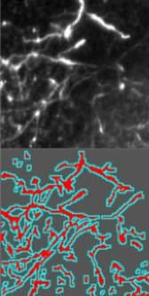
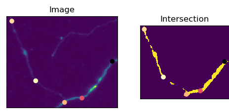
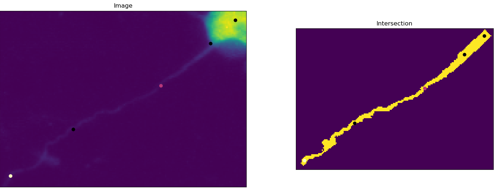
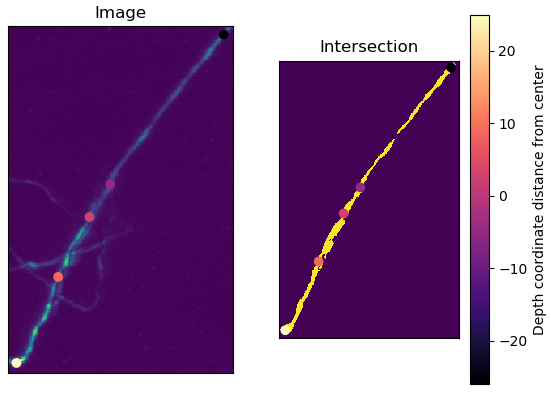
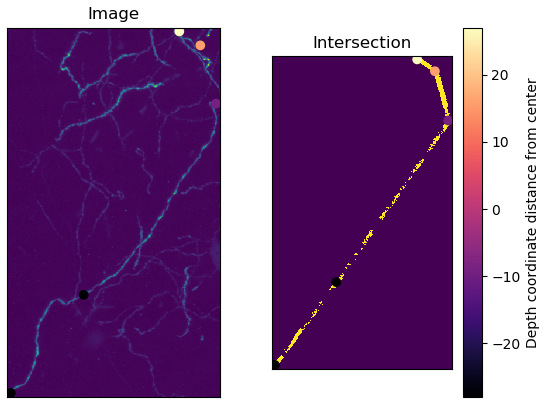
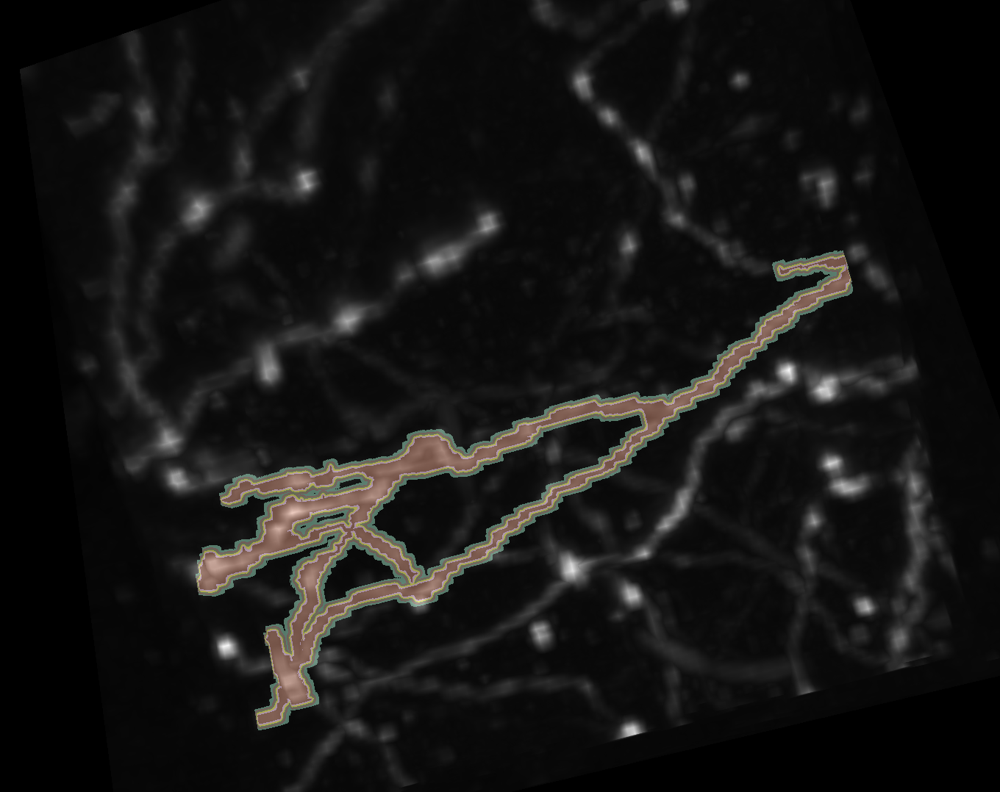
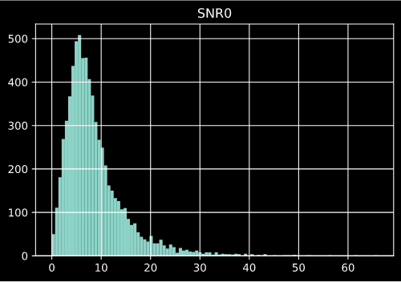
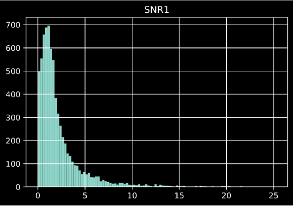

class: left, name:opening # Brainlight - Computational Thomas L. Athey <br><br> <img src="images/funding/jhu_bme_blue.png" STYLE="HEIGHT:95px;"/> <img src="images/funding/KNDI.png" STYLE="HEIGHT:95px;"/> <br> .foot[w: <http://neurodata.io/talks/mouselight_19_11_13.html>] --- ## Outline - Personnel - Computational Resources - Cloud Storage and Visualization - Voxel-wise Ground Truth - Segmentation Algorithms --- ## .k[Personnel] --- .pull-left[#### Advisors - Prof. Joshua Vogelstein - Prof. Jeremias Sulam - Prof. Donald Geman - Prof. Daniel Tward - Prof. Michael Miller ] .pull-right[ #### Computer Vision - Thomas Athey - NDD Group #### Cloud Computation - Vikram Chandrashekhar #### Infrastructure - Anthony Kolasny - Dr. Ben Falk ] --- ## .k[Computational Resources] --- ### Clark 320 - Windows workstation (192GB RAM, 2 monitors) - Linux workstation (32GB RAM, 2 monitors) ###On the way - 2 x Linux workstations (128GB RAM) - 2 x 200TB Servers ###Data - 1 complete mouse brain, 2 channels (~28TB total) - 180 completely traced neurons - ~250k neuron fragments --- ## .k[Cloud Storage and Visualization] --- ## Neuroglancer Precomputed Format - Store on public server (e.g. Amazon S3) - Able to manually visualize output of algorithms in 3d - Viewable and downloadable from <a href="https://viz.neurodata.io/?json_url=https://json.neurodata.io/v1?NGStateID=EqldlPfZWgOKuQ">anywhere</a> - Can show statistics across space - Can show results of image processing <img src="images/mouselight/neuroglancer.png" STYLE="HEIGHT:300px;"/> --- ## .k[Voxel-wise Ground Truth] --- ### Rationale - Current "Ground-Truth" is a tree of spatial coordinates .pull-left[ <figure> <img src="images/mouselight/neuron.png" style="width:80%"> <figcaption>Example Trace.</figcaption> </figure> ] .pull-right[ <figure>  <figcaption>Friedmann et. al. 2019</figcaption> </figure> ] - Convert to voxel-wise segmentation for: - Machine learning training - Evaluation with voxel-wise error - Morphology statistics --- ### Semi-automated Approach - Automatic Methods - Skeleton ∩ Threshold - Region Growing - Manual Trimming - Napari --- ### Skeleton ∩ Threshold <figure>  </figure> --- ### Skeleton ∩ Threshold <figure>  </figure> --- ### Skeleton ∩ Threshold <figure>  </figure> --- ### Skeleton ∩ Threshold <figure>  <figcaption>Neuron curves between points.</figcaption> </figure> --- ### Skeleton ∩ Threshold <figure> <img src="images/mouselight/noise1.png" alt="Trulli" style="width:100%"> <figcaption>Noise affects threshold.</figcaption> </figure> --- ### Region Growing - Label pixels connected to a seed and lie within a range of intensities. <figure> <img src="images/mouselight/rgood2.png" alt="Trulli" style="width:100%"> <figcaption>Can address curved axons.</figcaption> </figure> --- ### Region Growing <figure> <img src="images/mouselight/rgood1.png" alt="Trulli" style="width:100%"> <figcaption>But may grow into nearby axons.</figcaption> </figure> --- ### Region Growing <figure>  </figure> --- ### Signal to Noise Ratio <figure>  </figure> --- ### Signal to Noise Ratio <figure>  </figure> --- ### Manual Trimming - Napari - fast, interactive, multi-dimensional image viewer for Python - <a href="https://github.com/napari/napari">Open source</a> <figure> <img src="images/mouselight/napari2.png" style="width:80%"> </figure> --- ## .k[Segmentation Algorithms] --- ### Basic Image Processing - Preprocessing - Thresholding and morphological closing - Region growing/watershedding ### Geman and Jedynak, 1996 - Road model - piecewise linear and 3 attachment angles - Assume spatial invariance and conditional independence - Approximate MLE with sequential tests - convex problem - 6000 x 7800 image in 1min ### State of the art CNNs - TrailMap (Friedmann, 2019) - DeepNeuron (Zhou, 2018) - Floodfilling network (Januszewski, 2018) --- class: top, left ### Thanks for the Help on the Slides <div class="container"> <img src="faces/jovo.png"/> <div class="centered">Joshua Vogelstein</div> </div> <div class="container"> <img src="faces/mim.jpg"/> <div class="centered">Michael Miller</div> </div> <div class="container"> <img src="faces/anthony.jpg"/> <div class="centered">Anthony Kolasny</div> </div> <div class="container"> <img src="faces/vikram.jpg"/> <div class="centered">Vikram Chandrashekhar</div> </div> <div class="container"> <img src="faces/bijan.jpg"/> <div class="centered">Bijan Varjavand</div> </div> <div class="container"> <img src="faces/blank.png"/> <div class="centered">Victor Wang</div> </div> <img src="images/funding/nih_fpo.png" STYLE="HEIGHT:95px;"/> w: <http://neurodata.io/talks/mouselight_19_11_13.html></http:> --- ### Supplement - Skeleton ∩ Threshold 1. Threshold at minimum intensity of points 2. Create skeleton from points 3. Find intersection of 1 and 2 --- ### Supplement - SNR SNR = (mean(points)-mean(image))/sd(image) <figure> <img src="images/mouselight/snr_paper.png" style="width:80%" class="center"> </figure> ---